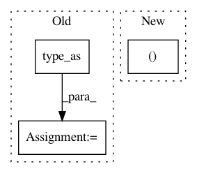

bcdec7cdfadef83ea07a918a973aba4220177eaf,models/AttModel.py,AttModel,_diverse_sample,#AttModel#,346
Before Change
unfinished = it > 0
else:
unfinished = (seq[:,t-1] > 0) & (it > 0) // changed
it = it * unfinished.type_as(it)
seq[:,t] = it
seqLogprobs[:,t] = sampleLogprobs.view(-1)
return torch.stack(seq_table, 1).reshape(batch_size * group_size, -1), torch.stack(seqLogprobs_table, 1).reshape(batch_size * group_size, -1)
After Change
if t == 0:
unfinished = it != self.eos_idx
else:
unfinished = seq[:,t-1] != self.pad_idx & seq[:,t-1] != self.eos_idx
it[~unfinished] = self.pad_idx
unfinished = unfinished & (it != self.eos_idx) // changed
seq[:,t] = it
In pattern: SUPERPATTERN
Frequency: 3
Non-data size: 3
Instances
Project Name: ruotianluo/self-critical.pytorch
Commit Name: bcdec7cdfadef83ea07a918a973aba4220177eaf
Time: 2020-04-02
Author: rluo@ttic.edu
File Name: models/AttModel.py
Class Name: AttModel
Method Name: _diverse_sample
Project Name: Zhaoyi-Yan/Shift-Net_pytorch
Commit Name: 9503fd51007f3c31daa5a8c110c4b090d3644fdc
Time: 2018-12-13
Author: yanzhaoyi@outlook.com
File Name: models/accelerated_shift_net/accelerated_InnerShiftTripleFunction.py
Class Name: AcceleratedInnerShiftTripleFunction
Method Name: forward